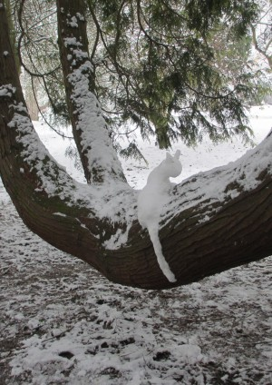

Underground at the Botanic Garden is a very select space, storing treasures collected from around the world for over 300 years. The Herbarium is housed in the Sainsbury Laboratory and was moved from Plant Sciences last year after being frozen to -40°C. This is the first time the whole collection has been under one roof. Darwin’s collection of plant specimens, assembled on his Beagle voyage, are housed here. These include certain now world extinct species. Some of the Herbarium collection of John Lindley (1799 – 1865), famous English botanist, gardener and orchidologist, is also kept here still in its original folders soot blackened from his west London home. Kew has his orchid collection.

It is a fascinating space. It still accommodates the original, worn chair used by Professor Charles Babbington (1861) Henslow’s successor as Professor of Botany at Cambridge, juxtaposed with state of the art work benches and storage spaces with temperature control. Ann Gray and I spent the morning exploring this space. Finally we were taken to see Suzanna Heron’s wonderful, carved wall which she named Henslow’s walk. The vast carved wall imitating some of the elegant leaf shapes and stem angles from Henslow’s collected herbarium sheets.
Judy Fox, Education officer at the Botanic Garden.

No snow! And everywhere has changed. There are snowdrops, hundreds, purple violas in the bee border, there are honey bees out and flying round the hives. In two days of sun, more plants open, the lawns have a sudden rash of daises. The Persian Ironwood flushes a deep pink and I can see it from far across the garden. The most frequent visitor has a baby in a sling and another who kicks up its heels and runs, and runs! In the vaults, the Herbarium should be classed as one of the wonders of the world, deeply frozen to move here from its home at Plant Sciences and beyond, it is being painstakingly filed, recorded, its treasures made available to anyone who wants to visit. Here they will find Henslow’s wonderful lecture illustrations, his grasses ranked by size to show their variation and Darwin’s plants from the Beagle voyage, the definitive, that is, the ‘type species’ of trees and plants edged in crimson. Our first visit from the students was a mixture of discovery and rekindled memories of first visits many years ago; a picnic by the fountain, the stepping stones, falling in the water! They left the Garden with treasure bags filled with cones, seeds, fallen flowers and the knowledge that it takes four people at full stretch to hug the Giant Redwood.
Ann Gray, poet in residence at the Botanic Garden
Two days in Narnia, the snow inches thick, highlighting the silhouettes of Henslow’s trees against the January sky. We crunched our way round sometimes misremembered paths to discover flowers hidden in the brilliant white of it. The Winter Garden colours still shine through, a poetry of Mahonia, Winter Sun, Silver Queen, Red Sentinel. Futher on, The Persian Ironwood has a mass of blood red stamens and when the snow lifts I am told it will blush in such a way we’ll see it from a distance. This is the tree that speaks to me. Every time I think I’m ready to go home, I circle the systemic beds to stand underneath its tangle of dappled branches, all the colours of the Persian snakes.
Gardeners and Botanists seem to me a special people, not hoarders but generous to a fault. They plant trees for future generations, hold in their imagination what their skill and patience will become. I watched a meadow sown in sand and snow. Whilst putting up the fence they tell me how it’s done, wearing their knowledge lightly but with passion.
This was always going to be extraordinary, even without the gift of snow.
Ann Gray

Ann Gray and I walked in the snow scape at the Botanic Garden enjoying the silent scene. We were tree hunting but found both plant and animal treasures. We saw animal foot prints in the snow – predominantly human and of dramatically different sizes. There were paw prints both small and large too; we thought of foxes and Muntjac deer, the biggest of all was probably badger (surely not bear). We looked at fantastic trails of tripod bird prints. The best animal was a secret snow-white snow cat balanced on a branch. It was left there by some secret visitor for us to find and enjoy.
We admired the tiny, bright, scarlet flowers of the Persian Ironwood tree, made all the more dramatic by the snow etched branches. We went to find out how long this tree had been in the Garden and found records of the receipt of seed in 1880 and 1881 written in beautiful copperplate handwriting in the Accessions Ledgers. The plant label on the tree told us this plant had come from Iran, its common name told us this was originally Persia. Our Director told us over lunch that the tree was given its Latin name, Parrotia persica after the German naturalist Friedrich Parrot who discovered the tree during the nineteenth century.
Judy Fox